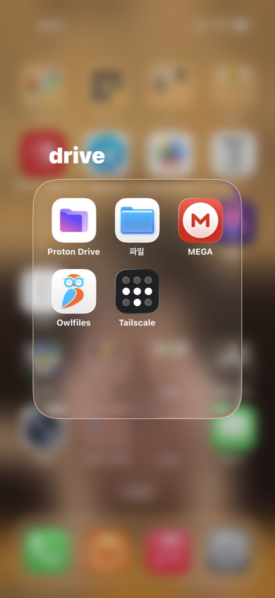
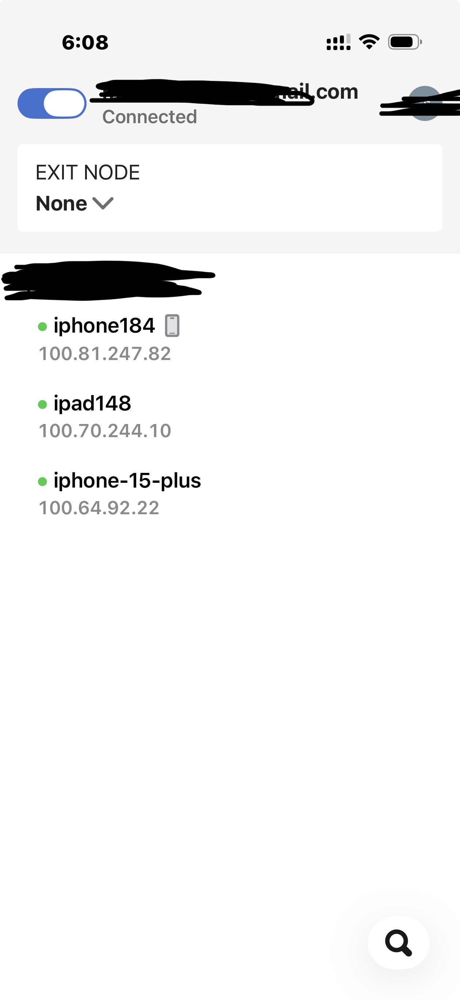
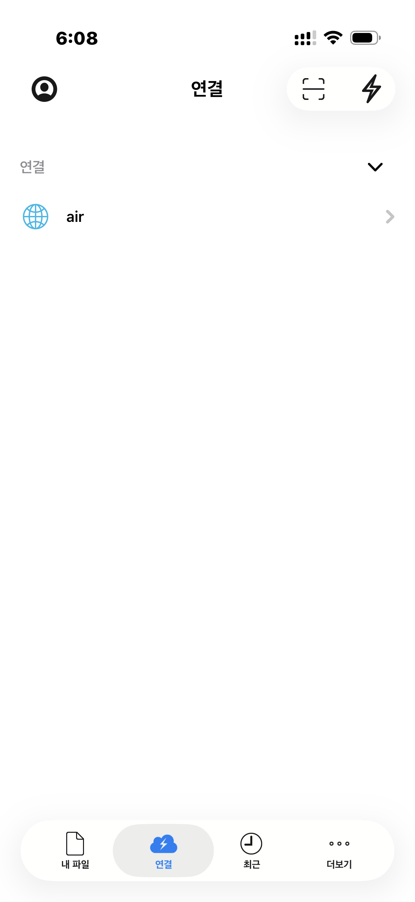

안 쓰고 굴러다니는 아이패드가 하나 있었다. 그냥 두기 아까워서, 이번엔 개인 파일서버로 굴려보기로 했다.
Owlfiles라는 앱을 쓰면 아이패드를 WebDAV/FTP 서버로 바꿀 수 있다. 앱에서 "서버 시작"만 누르면, Tailscale로 묶어둔 내 사설망 안에서 다른 기기가 그 아이패드 저장공간에 파일을 넣고 뺄 수 있게 된다.

먼저 걱정된 것 — 타인이 들어올 수 있나?
"서버"라는 말이 붙으면 제일 먼저 드는 생각이 "이거 남이 뚫고 들어올 수 있는 거 아니야?"다. 확인해보니 두 가지를 구분해서 봐야 했다.
상단에 뜨는 VPN 아이콘은 Tailscale 터널이 살아있다는 표시일 뿐, Owlfiles 서버가 켜져 있는지와는 별개다. 그리고 서버 자체가 Tailscale 사설망 안에서만 열려있는 구조라, 내 기기들끼리 묶인 그 네트워크 바깥에서는 애초에 접근 경로 자체가 없다. 즉 인터넷에 무방비로 노출된 공개 서버가 아니라, 내 기기들만 아는 사설 터널 안에서만 열리는 서버다.
슬립 문제 — 화면이 꺼지면 서버도 잔다
테스트해보니 재밌는 걸 발견했다. 아이패드 화면을 그냥 잠그면(전원 버튼으로 슬립), 1~2분 안에 서버가 응답을 멈췄다. iOS가 배터리 절약을 위해 백그라운드 앱을 강제로 재워버리는 정책 때문이었다.
다시 켜서 서버를 껐다 켜니 접속이 됐다. 그래서 운영 방침을 이렇게 정했다.
평소엔 서버를 꺼둔다. 파일 옮길 일이 있을 때만 아이패드 화면 자동 잠금을 "안 함"으로 바꾸고, 그때만 서버를 켠다.

사실 이게 오히려 보안 관점에서도 더 낫다. 서버가 켜져 있는 시간 자체가 공격 가능 시간이니, 필요할 때만 켜는 게 최소 노출 원칙에 맞는 거다.
몇 가지 추가로 신경 쓰는 것들:
- 작업 중엔 전원 버튼을 실수로 누르지 않기 — 수동으로 화면을 잠그면 자동 잠금 설정과 무관하게 그 순간 바로 서버가 멈춘다.
- 화면을 계속 켜두면 배터리 소모가 크니, 파일 옮기는 동안은 충전 케이블을 연결해둔다.
- 작업 끝나면 서버 중지 + 자동 잠금 원상복구를 세트로 한다. 안 그러면 나중에 깜빡하고 화면 켜진 채로 방치하게 된다.
덤으로 발견한 것 — 사진 앱에서 바로 전송
쓰다 보니 알게 된 건데, 아이폰 사진 앱에서 파일 앱을 거치지 않고 바로 아이패드로 사진을 보낼 수도 있었다. 사진 앱에서 공유 버튼을 누르고 공유 시트를 옆으로 넘기면 Owlfiles가 목록에 뜬다. 그걸 탭하고 업로드 대상(아이패드 연결)을 고르면 바로 전송된다.

(공유 시트에 안 보이면 맨 아래 "더 보기"에서 토글을 켜줘야 할 수도 있다. iOS가 기본적으로 자주 안 쓰는 공유 확장을 숨겨두는 경우가 있다.)
이렇게 하니 아이패드가 진짜 "무선 개인 파일서버"처럼 굴러간다. 평소엔 조용히 꺼져 있다가, 필요할 때만 잠깐 켜서 쓰는 방식. 안 쓰던 기기 하나 살리는 김에 보안 습관까지 하나 더 챙긴 셈이다.